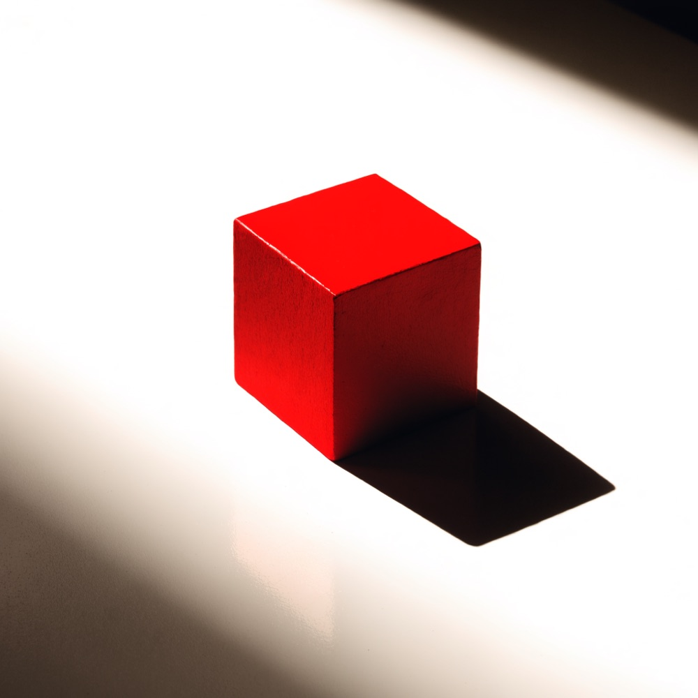
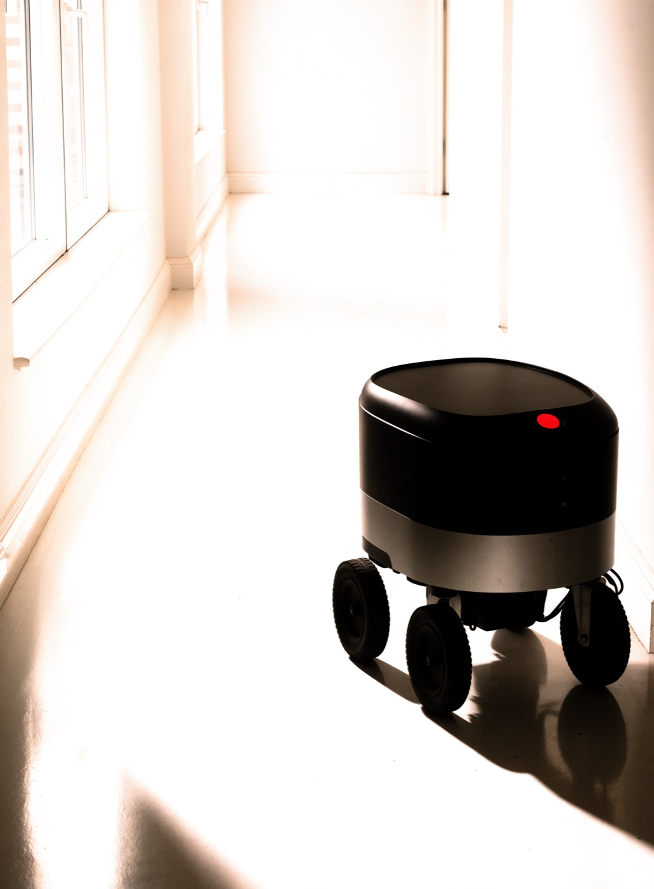
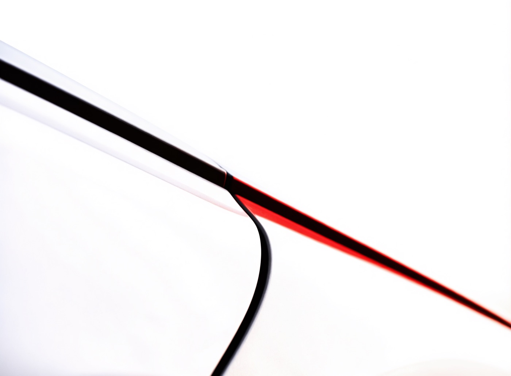
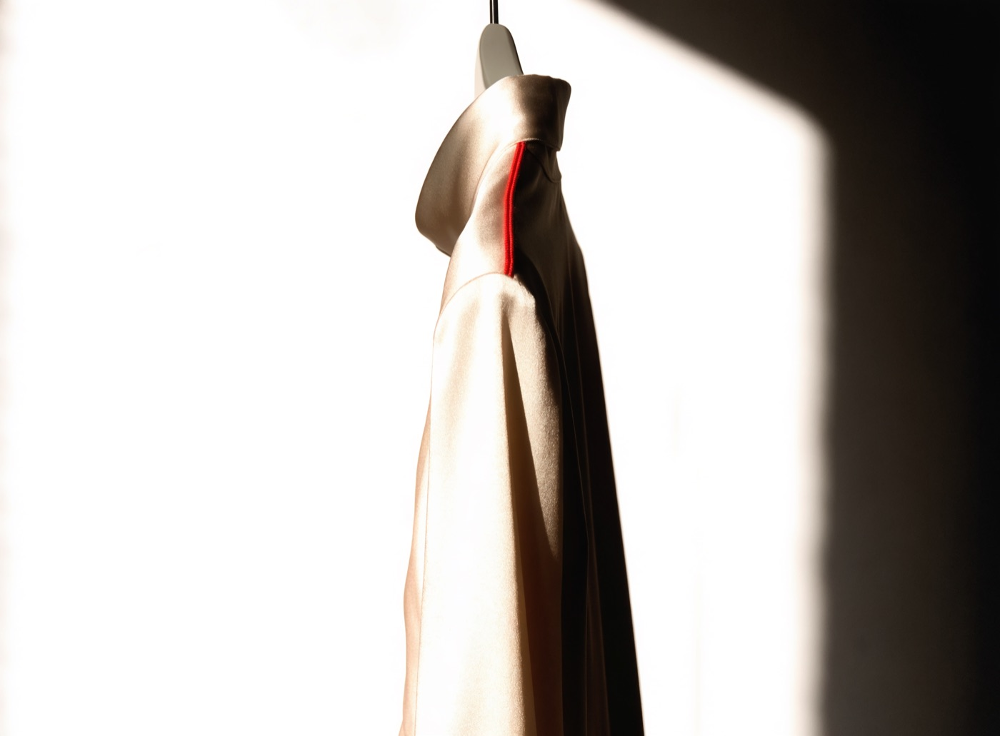

Design that survives engineering.
Sanjay Chauhan, senior product designer at ZERO. Five years, a hundred brands, and a habit of shipping the build instead of handing over the file.



mere kaam
Five rooms, one job: make the complicated thing obvious.
Luxury fashion, marketplaces at scale, cars, floor robots, and now an AI-native hiring platform.
Senior Product Designer, 18 months, ongoing
ZERO
An AI-native simulation platform. People do real work inside real job scenarios with an AI coworker next to them, build a portfolio out of that work, and get hired on the proof. Learners never pay. Recruiters pay only when they hire.
- Own the learner side end to end, from the first thirty seconds to sign off
- Nine-step scenario flow, one shape repeated until it stops needing explanation
- An AI coworker that sits beside the learner, never above them

Luxury fashion and e-commerce
Manish Malhotra
Couture on a screen. Rebuilt the shopping path so the clothes lead and the interface gets out of the way.
- Discovery restructured around the garment, not the grid
- Editorial and commerce running as one surface
- A checkout that respects the price of what is in it
Commerce at scale
LimeRoad
A catalogue that never stops growing. Restructured discovery so scale stopped reading as clutter.
- Browse rebuilt for a catalogue measured in millions
- Filtering that narrows without dead ends
- A system the team could keep extending after I left
Automotive
MG Motors
The showroom moved online. Rebuilt the digital experience around the decision people are actually making.
- Configuration that answers "can I afford this" early
- Specification made comparable instead of exhaustive
- A handover path from browsing to a real dealership
Robotics
Peppermint Robotics
Industrial robots that people have to operate at 6am. Interfaces built for gloves, noise and no training.
- Controls that work through a glove and across a noisy floor
- Status a supervisor can read from across the room
- Error recovery designed for someone who did not cause the error
the argument
Beside you, not above you.
This is the decision the whole of ZERO rests on, running live. Flip it and watch what the other version costs.
Your brief
Your submission did not meet the Audience requirement. Review and try again.
Beside: the note arrives while the work is still moving, tied to the requirement it came from, and nothing is blocked. You keep your hands on the page.
Global brands across commerce, fintech, luxury and robotics.
Projects shipped, not just designed.
Years from graphic design to product.
Months building an AI-native platform at ZERO.
Working next to the machine.
The same idea I design at ZERO is the one I work by. Not the tool list, which everybody has now. What changed is how much gets tested before anyone commits to it.
Forty directions, not four
Exploration used to be rationed by how fast I could draw. The bottleneck is taste now, which is the right bottleneck to have.
A week of synthesis in a morning
Reading, clustering, first pass themes. I still read the raw transcripts, because that is where the surprises are.
Prototypes that run
Working builds instead of clickable rectangles, so a usability test finds real problems rather than prototype problems.
The judgment is still the job
AI is fast at plausible. Knowing which plausible thing is right is the part you hire a designer for.
mein kaun
I got here sideways.
I started as a graphic designer because I liked making things look right. My engineering degree kept interrupting with a different question: does it hold up?
Those two arguments turned into a career. Five years in, over a hundred brands across commerce, fintech, luxury and robotics, and the pattern never changes. The work that lands is the work someone could actually build and ship.
Now I spend my days on the other side of that question, designing how a person and an intelligent system share a task without one of them taking over.
Got something that needs to ship?
Open to senior product design roles and selected freelance work.